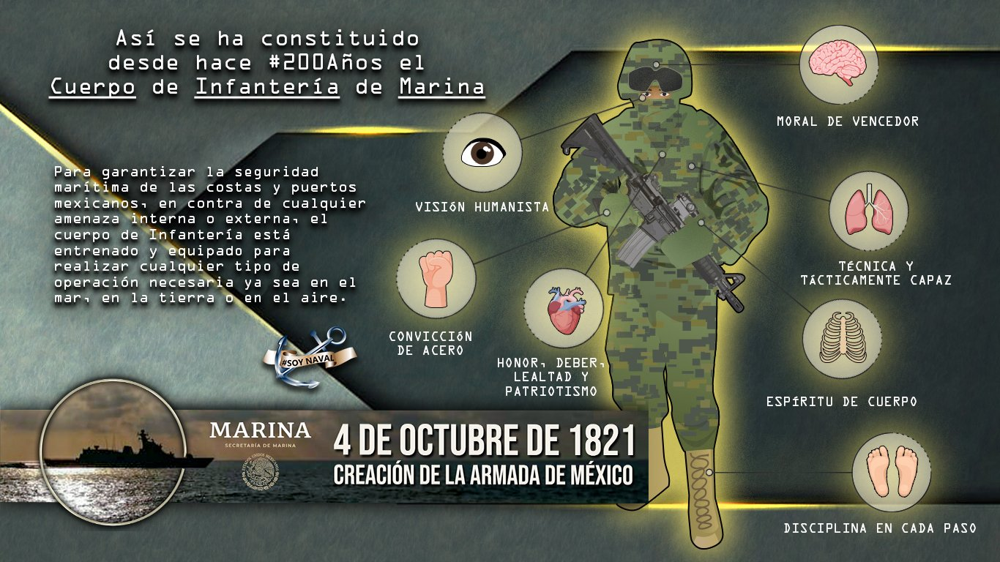

Especialización de IM para el Cuerpo General.
Formación Técnico Profesional.
Operaciones Anfibias.
Artillería de Campaña.
Datos curiosos: Los examenes que se aplican son el de conocimiento academico, fisico, medico y psicologico.
La Secretaria de Marina(SEMAR) realizan el reclutamiento en otras ciudades, entre ellas Mazatlan, Topolobampo, Salinas Cruz, Huatulco, Manzanillo, Islas Mujeres, Ciudad de Mexico, entre otras.
El entrenamiento para las tropas de Infanteria puede ser desde 15 dias, un mes o hasta 45 dias, en un horario que inicia desde muy temprano hasta la tarde, donde se tienen contempladas asignaturas teoricas y actividades fisicas.
En el examen medico te hacen el examen de la orina,toxicologico de 3 parametros(anfetaminas, cocaina y mariguana),grupoy factor RH.